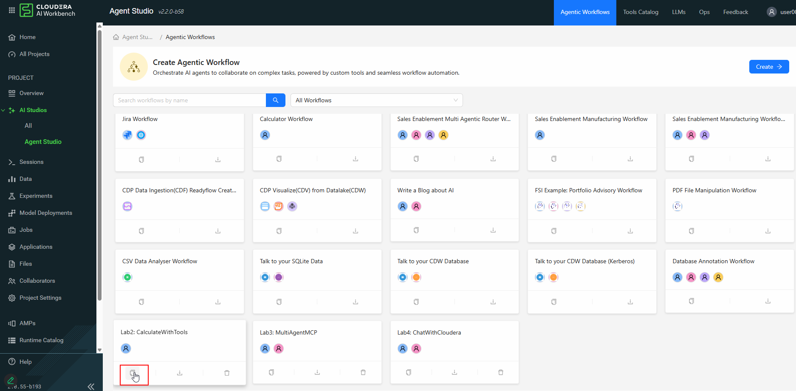
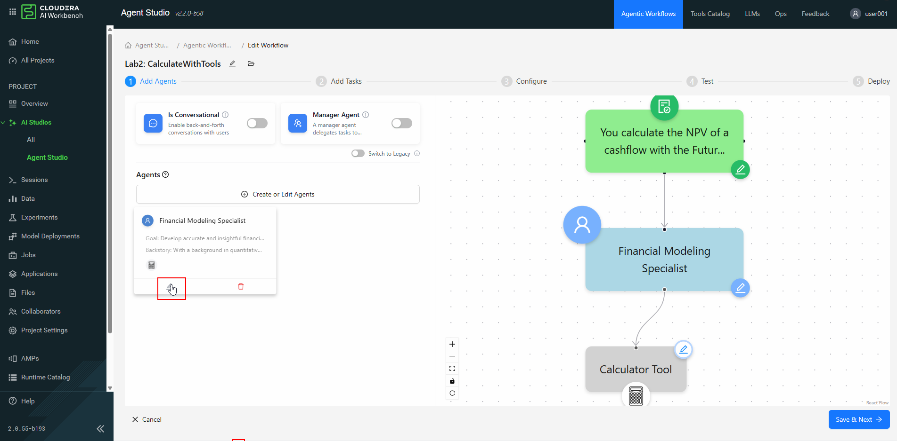
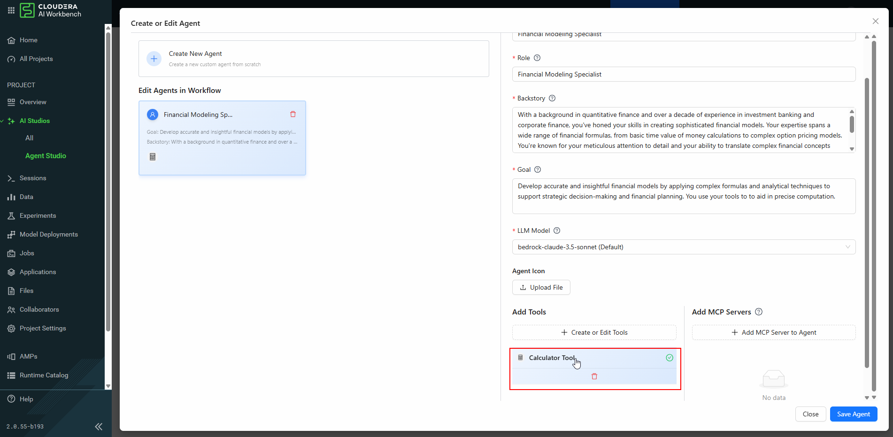
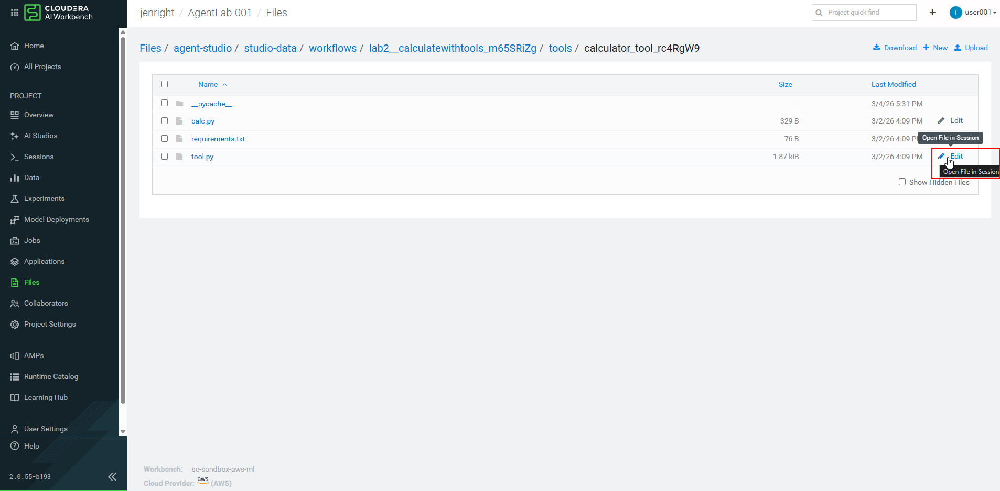
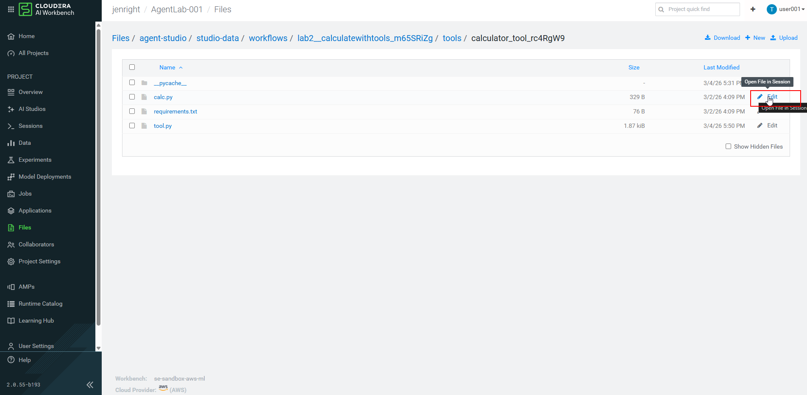
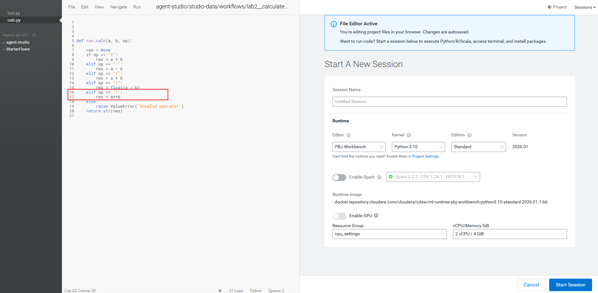
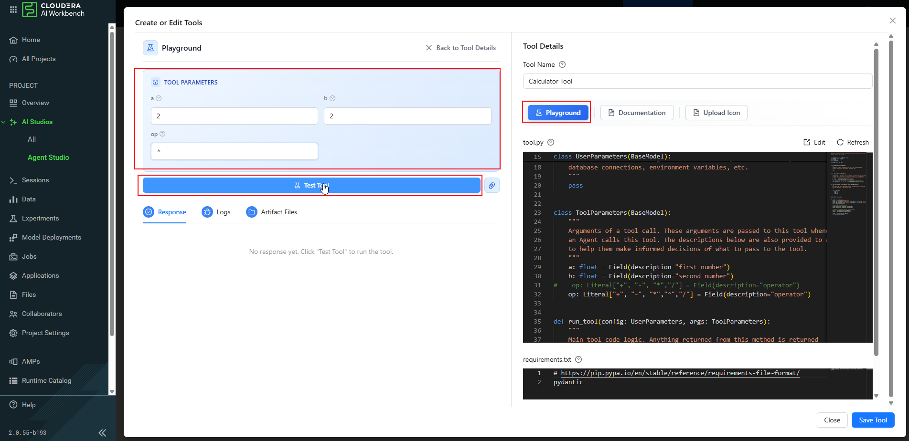
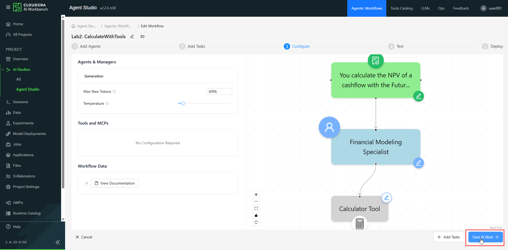
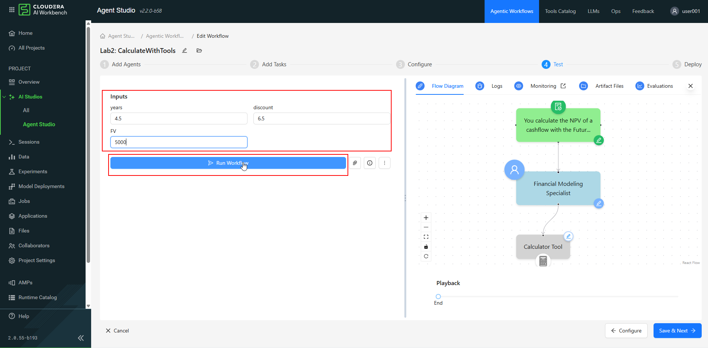
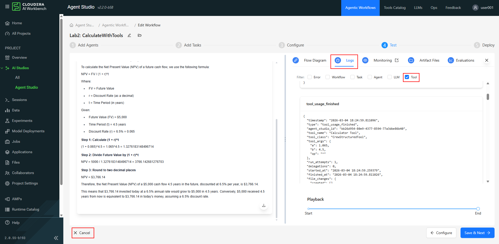

Lab 2 — Integrating Tools in an Agent Workflow¶
In this lab you'll address the limitations of LLM-only agents by adding tools to your AI workflow. You'll use a calculator tool and observe how the LLM uses problem decomposition to delegate complex math to deterministic code — for flawless precision.
Goals
- [ ] Build an AI agent workflow with tool-calling capability
- [ ] Enhance a tool to support a custom calculator operation
- [ ] Observe LLM reasoning and tool delegation
Requirements¶
You must be logged into your assigned Cloudera AI project with the Agent Studio application launched. See the Agent Studio page for setup instructions.
Step 0 — Load the Workflow Template¶
This lab starts from a pre-built workflow template. Download it and import it into Agent Studio.
The zip contains the Lab2: CalculateWithTools workflow plus the Calculator Tool
(tool.py, calc.py, requirements.txt).
- In your CML project, click Files in the left sidebar and Upload
Lab2.zipto the project root (/home/cdsw/). - In Agent Studio, go to Agentic Workflows → Workflow Templates → Import Template.
- Enter the path
Lab2.zip(or the full path where you uploaded it) and click Import.
Instructor-led labs
If your instructor has already provisioned the workflow templates in your project, you
can skip this step — the Lab2: CalculateWithTools template will already be listed
under Workflow Templates.
Step 1 — Create a Workflow from the Template¶
- On the Agent Studio home page, go to the Workflow Templates area and click View All.

- Find and click Lab2: CalculateWithTools.

- This generates a draft workflow from the template as your starting point.
The template creates a non-conversational sequential workflow with the following settings:
| Setting | Value |
|---|---|
| Is Conversational | OFF — single-run pipeline |
| Manager Agent | OFF — one agent, no routing needed |
The pre-built agent has all four required fields:
| Field | Value |
|---|---|
| Name | Financial Modeling Specialist |
| Role | Financial Modeling Specialist |
| Backstory | With a background in financial analysis and expertise in precise mathematical computations... |
| Goal | Develop accurate and insightful financial models and calculations... |
The pre-built task has both required fields:
| Field | Value |
|---|---|
| Description | You calculate the NPV of a cashflow with the Future Value: {FV}, Time Period: {years}, and Discount Rate: {discount}. Show your work. |
| Expected Output | The steps to calculate the NPV and the final result. |
Step 2 — Edit the Agent and Access Tools¶
- Locate the Financial Modeling Specialist created by the template and click Edit.

- In the Create or Edit Agent dialog, click Create or Edit Tools, then select the Calculator Tool from the menu.

Step 3 — Modify tool.py to Add the Exponent Operator¶
- Click Edit on the tool details to open the files menu.

- Select and edit the
tool.pyfile.

- Under the
ToolParametersclass, locate the list of operators. The template ships with the operator list that excludes the exponent — you need to switch to the version that includes the caret (^):- Delete the comment hash (
#) in front of the operator list that includes^. - Add a comment hash (
#) to the old operator line that does not include^.
- Delete the comment hash (

- The file auto-saves, but you can click File → Save to confirm. Click your browser's Back button to return to the file list.
Step 4 — Modify calc.py to Enable the Exponent Math¶
- Open and edit the
calc.pyfile, which runs the actual calculation.

- Locate the two lines that handle the exponent (
^) operator and uncomment them by deleting their#— keeping the indentation correct:
def run_calc(a, b, op):
res = None
if op == "+":
res = a + b
elif op == "-":
res = a - b
elif op == "*":
res = a * b
elif op == "/":
res = float(a / b)
elif op == "^": # ← uncomment this line
res = a**b # ← and this line
else:
raise ValueError("Invalid operator")
return str(res)

- Click File → Save, then close the file-editor browser tab.
- Click the Refresh button in the Calculator Tool menu to apply your code changes.

Why the exponent matters
The NPV formula is FV ÷ (1 + rate)^years. Computing (1.065)^4.5 requires an
exponent operation — which the tool didn't support until you enabled it here.
Division (/) was already implemented. With ^ now available, the agent can hand the
entire calculation to the tool.
Step 5 — Save the Tool and Agent¶
- Click Save Tool and close the tool dialog.
- Back in the Create or Edit Agent dialog, click Save Agent and close it.
- Then click Save & Next on the Add Agents screen.

Optional: test the tool in isolation (if your version has a Playground)
Some Agent Studio versions include a Playground for testing a tool on its own.
If yours does, click Playground, enter A = 2, B = 2, Operator = ^, and click
Test Tool — the response should output 4 (2² = 4).

If the Playground is not available in your version, don't worry — you will validate the tool end-to-end when you run the full workflow in Step 7.
Step 6 — Review Task and Configuration¶
- Review the pre-populated task (description, expected output, and variable placeholders are already filled in). No changes are needed — click Save & Next.

- On the configuration screen, leave tokens and temperature at their defaults and click Save & Next.

Step 7 — Test the Full Workflow¶
- On the test screen, input the same values used in Lab 1:
| Variable | Value |
|---|---|
| Future Value | 5000 |
| years | 4.5 |
| discount | 6.5 |
- Click Run Workflow.

- Observe the output. You'll see the agent "thinking", extracting values, and calling the
tool to perform the calculations. Verify the final result is exactly
$3,766.14— matching the precise calculator.net output from Lab 1.

Step 8 — Review the Execution Logs¶
- Open the Logs tab and filter by Tool usage.
- Observe how the LLM first passed the inputs to the tool to calculate the exponent, the tool passed the partial answer back, and the LLM then called the tool a second time to perform the division.
- Once satisfied, click Cancel on the workflow creation and return to the home screen (no need to deploy this lab).

🚀 We have now concluded Lab 2.
Key Takeaways¶
| Concept | What you practised |
|---|---|
| Tool calling | The agent delegates arithmetic to deterministic code instead of guessing |
| Editing tool source | tool.py declares the operators; calc.py implements the logic — both must agree |
| Problem decomposition | The LLM split NPV into an exponent call and a division call, chaining tool results |
| Precision | With the tool, the agent matched the reference calculator exactly ($3,766.14) vs. Lab 1's approximate ~$3,700 |
What's Next¶
- Lab 3: Multi-Agent with MCP — a hierarchical workflow with a Manager Agent, a Web Search tool, and a Twitter MCP server.
- Agentic RAG-App Evaluation — a 5-agent pipeline that evaluates a RAG knowledge base built from global financial-market reports.